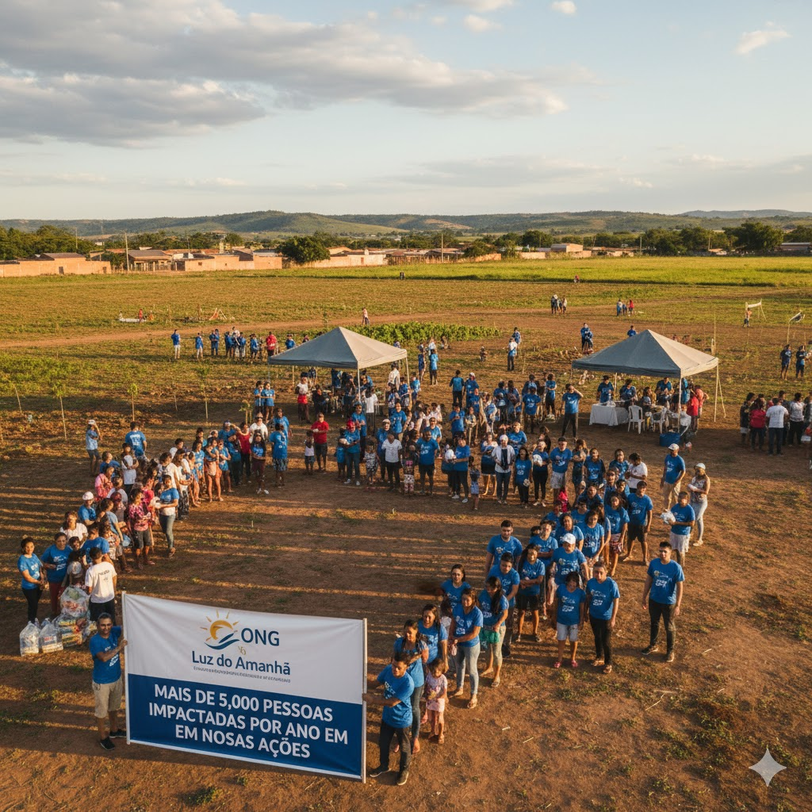

ONG Luz do Amanhã: Iluminando Caminhos
Somos uma organização não governamental dedicada a criar um futuro mais justo e sustentável. Nossa missão se baseia nos pilares de Solidariedade, Educação e Meio Ambiente, transformando vidas e comunidades em situação de vulnerabilidade.

Nossos Pilares
Trabalhamos incansavelmente para promover:
- Solidariedade: Apoio direto e humanitário a quem mais precisa.
- Educação: Acesso ao conhecimento para quebrar o ciclo da pobreza.
- Meio Ambiente: Conscientização e ações práticas de sustentabilidade.
Fale Conosco
Endereço Sede: Av. Esperança, 404 - Bairro Novo - São Paulo/SP - CEP: 01000-000
Telefone: (11) 98765-4321
Email: contato@ongluzdoamanha.org.br
Nosso horário de atendimento é de Segunda à Sexta, das 9h às 17h.